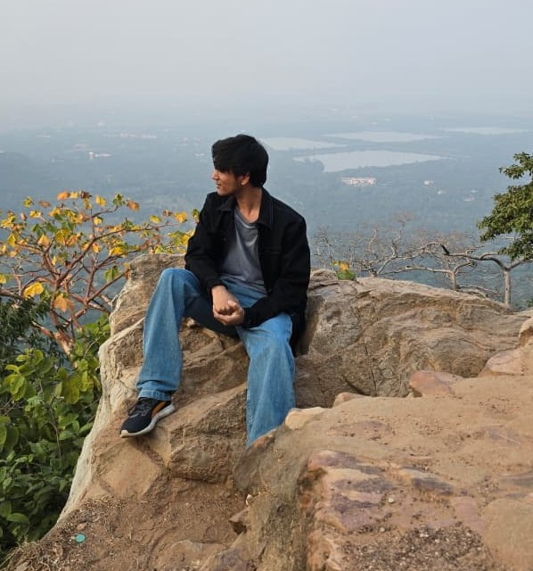

Recommendation Systems · Tessch Footwear
Built a behavior-driven recommendation engine, from browser dwell-time tracking to an L2-normalized similarity model and FastAPI serving layer.
INDUSTRYMechanical Engineering · IIT Kanpur
Kanpur, IN · IST
YUVRAJ SINGH CHAUDHARY
I like turning complicated questions into things that work — making research papers conversational, building recommendations from attention, and finding the physics in a painting. Mechanical engineering is where I started. Curiosity keeps expanding the map.
Projects across software
and engineering
Research papers in
ScholarRAG’s corpus
Paintings explored through
Fourier analysis
Macro F1 in ShiftGuard10’s
classification evaluation
SELECTED WORK
From research questions to working systems. Open a project for the problem, approach, and what I learned.
Coursework, smaller builds, and side explorations.
ABOUT

I’m Yuvraj, an undergraduate at IIT Kanpur. I enjoy the places where physical intuition, mathematics, and software meet — whether that’s a thermodynamic cycle or a retrieval pipeline.
My projects move between AI, recommendation systems, data analysis, and computational mechanics. The common thread is wanting to understand how things work, then building something that makes that understanding useful.
Outside project work, I’ve organized esports events, taught design and CAD workshops at Descon, and mentored students through their first machine learning application.
Python · C · C++ · SQL · R · MATLAB
NumPy · Pandas · Scikit-learn · TensorFlow · PyTorch · ChromaDB
FastAPI · Flask · Streamlit · Git · HTML · CSS
Aspen Plus · Simulink · Fusion 360 · Blender · LaTeX
Indian Institute of Technology Kanpur
B.Tech, Mechanical Engineering
Kendriya Vidyalaya Babu Garh Cantt
CBSE, Class XII · 91.8%
EXPERIENCE & COMMUNITY
Built a behavior-driven recommendation engine, from browser dwell-time tracking to an L2-normalized similarity model and FastAPI serving layer.
INDUSTRYHelped turn the E-Sports Society into an official institute club. Organized seven-plus events, including Summer Showdown and Winter War.
LEADERSHIPRan hands-on workshops in 3D modeling, rendering, CAD, and visual design. Helped members turn ideas into digital and physical prototypes.
DESIGN & COMMUNITYGuided around 20 students through data preprocessing, machine learning, and Flask web development.
MENTORSHIPSupported interview scheduling, venue logistics, and candidate coordination during campus placements.
VOLUNTEERINGTHE WORKSHOP
Small browser demonstrations of the ideas behind my projects. The examples use illustrative data, rather than live backend inference or benchmark runs.
Adjust the page dwell time and toggle window focus. Notice how bounces (<2s) and background tabs are discarded, while valid attention triggers exponential recency decay and dynamic L2-normalized footwear pairings.
Select a complex scientific research query across the 30-paper efficient LLM corpus. Compare how Dense BGE Embeddings, Sparse BM25Plus, and Reciprocal Rank Fusion (RRF) with Cross-Encoder reranking retrieve precise passages.
Explore how 2D Fourier transforms and isotropic annular shell binning quantify visual texture across 500 artworks. Toggle between art traditions to compare energy distribution slopes and Shannon shell entropy.
Select presenting patient symptoms below. This educational interface uses simple illustrative weights to explain how an ML result might be presented. It does not run the trained model or provide a diagnosis.
THE TOOLBOX, WITH SOME WIGGLE ROOM
Drag a tool or focus it and use your arrow keys.
THE SHORT VERSION
Pick the résumé that fits the conversation.
OFF THE CLOCK
Some moments between the projects.
CONTACT